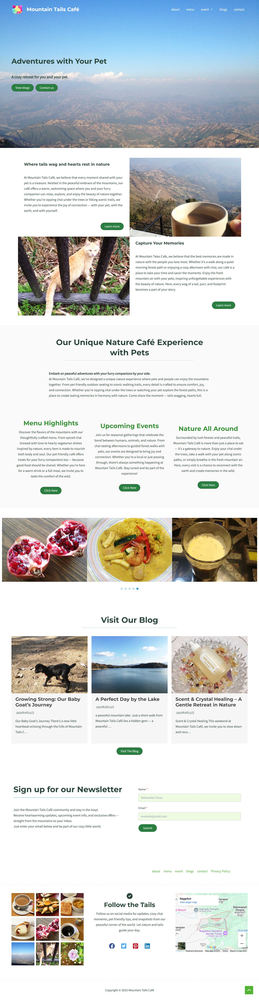
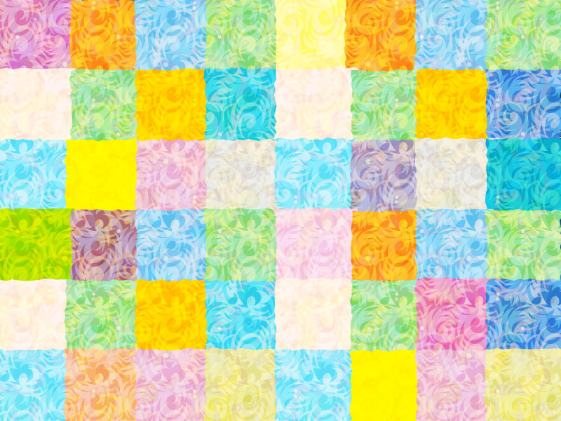
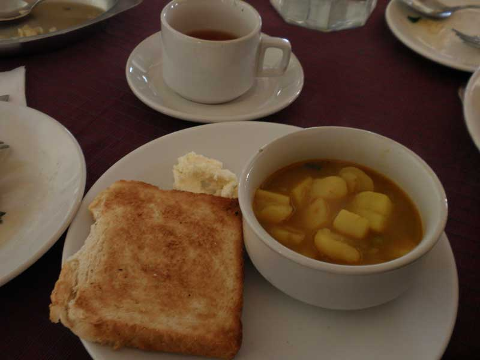
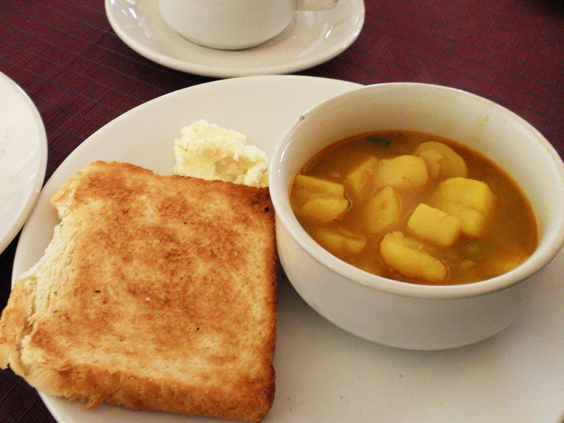

カスタムしたCSSは
こちら
で公開しています。
セキュリティ面を考慮し、カスタマイズが少ないページについては、子ページを作らずシンプルな構成にしています。
WordPress Site
astra + spectraで作ったWordPressサイトです。
ブロックエディタの使い方、サイトのデザインは
WordPress for Beginners: The Complete 2024 Master Class
で学習、作成したものをカスタマイズしました。
サンプルテキストはCopilotを活用して作成しています。

おまけ : 素材

おまけ : photoshop retouch

